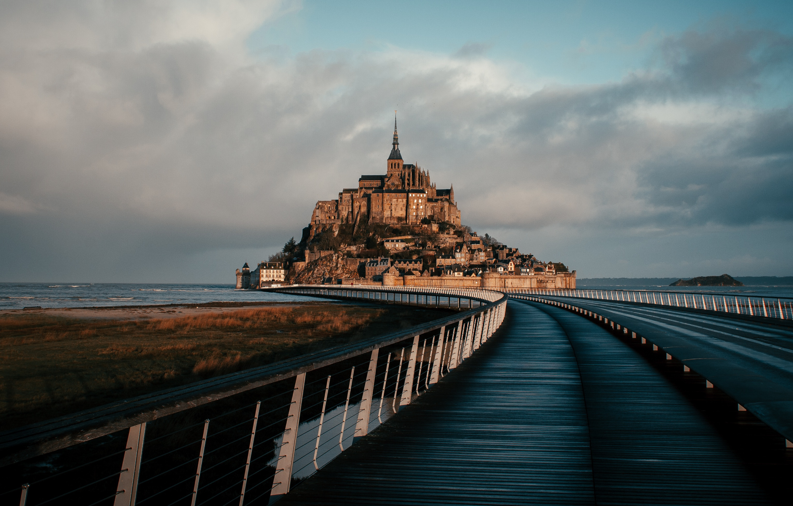

Mont-Saint-Michel at high tide (Photo: Unsplash)
The Wonder of the Western World
Mont-Saint-Michel is a tidal island and mainland commune in Normandy, France. The island lies approximately one kilometer off the country's northwestern coast and is famous for the Benedictine abbey that crowns its rocky peak. The abbey was built between the 11th and 16th centuries and is a stunning example of medieval architecture.
What makes Mont-Saint-Michel truly unique is its dramatic tidal variations. During high tide, the island becomes completely surrounded by water, while at low tide, the surrounding bay is exposed, allowing visitors to walk around the base (though this should only be done with a guide due to dangerous quicksand).